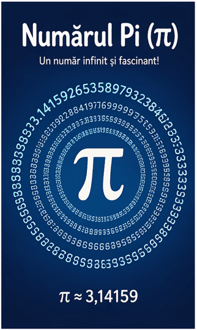

Numărul PI |
PI |
 |
Numărul PI este o constantă matematică esențială, care reprezintă raportul dintre circumferința unui cerc și diametrul său. Valoarea sa aproximativă este 3,14, însă are o dezvoltare zecimală infinită și neperiodică. Numărul PI apare în numeroase domenii ale matematicii, fizicii și ingineriei, fiind unul dintre cele mai cunoscute și studiate numere din istorie |